Introduction
Welcome to easysurv, an R package developed by the Maple
Health Group to support basic survival analysis.
This vignette will guide you through the basic functionalities of the package.
Installation
# First install 'pak' if you haven't already.
install.packages("pak")
# Then, install easysurv either from GitHub for the latest version:
pak::pkg_install("Maple-Health-Group/easysurv")
# Or from CRAN for the latest stable version:
pak::pkg_install("easysurv")Loading the package
# Start from a clean environment
rm(list = ls())
# Attach the easysurv package
library(easysurv)
# (Optional) load an easysurv analysis template
quick_start()quick_start() creates a new .R script, pre-loaded with
code for survival analysis using the easy_lung data set.
easy_lung is a formatted copy of the lung data
set from the survival package.
quick_start2() and quick_start3() create
similar .R scripts based on other data sets. These include
easy_bc (“bc” from the flexsurv package) and
easy_adtte (“adtte” from the ggsurvfit
package).
The choice of starting data introduces some variations in code structure and function calls.
Preparing your data
Below, we advise some practices to ensure that easysurv
can handle your data.
Data import
easysurv is designed to work with data frames.
Here are some packages & their functions you might use to import your survival data:
-
haven::read_sas()for SAS (.sas7bdat) files -
haven::read_dta()for Stata (.dta) files -
haven::read_sav()for SPSS (.sav) files -
readxl::read_excel()for Excel (.xls & .xlsx) files -
readr::read_csv()for .csv files
We’re going to use easy_adtte as an example data set.
Since it’s data that comes loaded with easysurv, we don’t
need any of the above functions.
surv_data <- easy_adtte
surv_data
#> # A tibble: 2,199 × 19
#> STUDYID SUBJID USUBJID AGE STR01 STR01N STR01L STR02 STR02N STR02L TRT01P
#> <chr> <dbl> <chr> <dbl> <chr> <dbl> <chr> <chr> <dbl> <chr> <chr>
#> 1 PSIVISSI… 1 PSIVIS… 78 Posi… 1 Hormo… NO P… 2 No pr… visma…
#> 2 PSIVISSI… 2 PSIVIS… 77 Posi… 1 Hormo… NO P… 2 No pr… table…
#> 3 PSIVISSI… 3 PSIVIS… 61 Posi… 1 Hormo… NO P… 2 No pr… table…
#> 4 PSIVISSI… 4 PSIVIS… 67 Nega… 2 Hormo… NO P… 2 No pr… table…
#> 5 PSIVISSI… 5 PSIVIS… 55 Posi… 1 Hormo… NO P… 2 No pr… visma…
#> 6 PSIVISSI… 6 PSIVIS… 70 Nega… 2 Hormo… NO P… 2 No pr… table…
#> 7 PSIVISSI… 7 PSIVIS… 54 Posi… 1 Hormo… NO P… 2 No pr… visma…
#> 8 PSIVISSI… 8 PSIVIS… 62 Nega… 2 Hormo… PRIO… 1 Prior… table…
#> 9 PSIVISSI… 9 PSIVIS… 61 Posi… 1 Hormo… NO P… 2 No pr… table…
#> 10 PSIVISSI… 10 PSIVIS… 65 Posi… 1 Hormo… NO P… 2 No pr… visma…
#> # ℹ 2,189 more rows
#> # ℹ 8 more variables: TRT01PN <dbl>, PARAM <chr>, PARAMCD <chr>, AVAL <dbl>,
#> # CNSR <dbl>, EVNTDESC <chr>, CNSDTDSC <chr>, DCTREAS <chr>Data structure
easysurv expects your data to have the following
structure:
- A column for
time(time to event or censoring). - A column for
eventstatus (1 for event, 0 for censored).- Be mindful that the event indicator in ADTTE data sets is named “CNSR” and is coded in the opposite way that R survival packages expect.
- Therefore, you may need to recode the event indicator in ADTTE data sets.
- An optional column for
group(for stratified analysis).
easysurv does not require you to use certain column
names, although consistency is encouraged.
surv_data <- surv_data |>
dplyr::filter(PARAMCD == "PFS") |> # Filtering may be relevant for your data
dplyr::mutate(
time = AVAL,
event = 1 - CNSR, # Recode status to 0 = censored, 1 = event
group = TRT01P
) |>
dplyr::mutate_at("group", as.factor) |> # Convert to factor for easier stratification
dplyr::as_tibble() # Convert to tibble for easier viewing
surv_data
#> # A tibble: 2,199 × 22
#> STUDYID SUBJID USUBJID AGE STR01 STR01N STR01L STR02 STR02N STR02L TRT01P
#> <chr> <dbl> <chr> <dbl> <chr> <dbl> <chr> <chr> <dbl> <chr> <chr>
#> 1 PSIVISSI… 1 PSIVIS… 78 Posi… 1 Hormo… NO P… 2 No pr… visma…
#> 2 PSIVISSI… 2 PSIVIS… 77 Posi… 1 Hormo… NO P… 2 No pr… table…
#> 3 PSIVISSI… 3 PSIVIS… 61 Posi… 1 Hormo… NO P… 2 No pr… table…
#> 4 PSIVISSI… 4 PSIVIS… 67 Nega… 2 Hormo… NO P… 2 No pr… table…
#> 5 PSIVISSI… 5 PSIVIS… 55 Posi… 1 Hormo… NO P… 2 No pr… visma…
#> 6 PSIVISSI… 6 PSIVIS… 70 Nega… 2 Hormo… NO P… 2 No pr… table…
#> 7 PSIVISSI… 7 PSIVIS… 54 Posi… 1 Hormo… NO P… 2 No pr… visma…
#> 8 PSIVISSI… 8 PSIVIS… 62 Nega… 2 Hormo… PRIO… 1 Prior… table…
#> 9 PSIVISSI… 9 PSIVIS… 61 Posi… 1 Hormo… NO P… 2 No pr… table…
#> 10 PSIVISSI… 10 PSIVIS… 65 Posi… 1 Hormo… NO P… 2 No pr… visma…
#> # ℹ 2,189 more rows
#> # ℹ 11 more variables: TRT01PN <dbl>, PARAM <chr>, PARAMCD <chr>, AVAL <dbl>,
#> # CNSR <dbl>, EVNTDESC <chr>, CNSDTDSC <chr>, DCTREAS <chr>, time <dbl>,
#> # event <dbl>, group <fct>Data labelling
easysurv can handle data with or without labels.
However, labelled data is easier to interpret.
# Check labels impacted by re-coding
attr(surv_data$event, "label")
#> [1] "Censoring flag (0 = Event, 1 = censored)"
# Check levels of the group factor variable
levels(surv_data$group)
#> [1] "tablemab + vismab 52 weeks"
#> [2] "tablemab x 12 week -> vismab 34 weeks"
#> [3] "tablemab x 52 weeks"
#> [4] "vismab x 52 weeks"Exploratory data analysis
easysurv provides a simple function,
inspect_surv_data(), to help you explore your data.
From this, we can see the first few rows of our data, the number of events and censored observations, sample sizes, and median survival estimates.
This helps us to understand the structure of our data and to identify any potential issues.
inspect_surv_data(
data = surv_data,
time = "time",
event = "event",
group = "group"
)
#>
#> ── Inspect Survival Data ───────────────────────────────────────────────────────
#>
#> ── First Few Rows ──
#>
#> # A tibble: 6 × 22
#> STUDYID SUBJID USUBJID AGE STR01 STR01N
#> <chr> <dbl> <chr> <dbl> <chr> <dbl>
#> 1 PSIVISSIG0002 1 PSIVISSIG0002_1 78 Positive 1
#> 2 PSIVISSIG0002 2 PSIVISSIG0002_2 77 Positive 1
#> 3 PSIVISSIG0002 3 PSIVISSIG0002_3 61 Positive 1
#> 4 PSIVISSIG0002 4 PSIVISSIG0002_4 67 Negative 2
#> 5 PSIVISSIG0002 5 PSIVISSIG0002_5 55 Positive 1
#> 6 PSIVISSIG0002 6 PSIVISSIG0002_6 70 Negative 2
#> STR01L STR02 STR02N STR02L
#> <chr> <chr> <dbl> <chr>
#> 1 Hormone receptor positive NO PRIOR USE 2 No prior radiotherapy
#> 2 Hormone receptor positive NO PRIOR USE 2 No prior radiotherapy
#> 3 Hormone receptor positive NO PRIOR USE 2 No prior radiotherapy
#> 4 Hormone receptor negative NO PRIOR USE 2 No prior radiotherapy
#> 5 Hormone receptor positive NO PRIOR USE 2 No prior radiotherapy
#> 6 Hormone receptor negative NO PRIOR USE 2 No prior radiotherapy
#> TRT01P TRT01PN
#> <chr> <dbl>
#> 1 vismab x 52 weeks 2
#> 2 tablemab x 12 week -> vismab 34 weeks 3
#> 3 tablemab + vismab 52 weeks 4
#> 4 tablemab x 52 weeks 1
#> 5 vismab x 52 weeks 2
#> 6 tablemab x 52 weeks 1
#> PARAM PARAMCD AVAL CNSR
#> <chr> <chr> <dbl> <dbl>
#> 1 Progression-free survival (years) PFS 0.824 0
#> 2 Progression-free survival (years) PFS 3.03 1
#> 3 Progression-free survival (years) PFS 2.32 0
#> 4 Progression-free survival (years) PFS 1.11 1
#> 5 Progression-free survival (years) PFS 2.00 1
#> 6 Progression-free survival (years) PFS 0.0931 1
#> EVNTDESC CNSDTDSC
#> <chr> <chr>
#> 1 Death NA
#> 2 Ongoing on first next-line therapy Censored at the last contact date
#> 3 Death NA
#> 4 Ongoing on first next-line therapy Censored at the last contact date
#> 5 Ongoing on first next-line therapy Censored at the last contact date
#> 6 No next-line therapy initiated Censored at the last contact date
#> DCTREAS time event group
#> <chr> <dbl> <dbl> <fct>
#> 1 PROGRESSIVE DISEASE 0.824 1 Vis
#> 2 PROGRESSIVE DISEASE 3.03 0 Tab->Vis
#> 3 PROGRESSIVE DISEASE 2.32 1 Tab+Vis
#> 4 PROGRESSIVE DISEASE 1.11 0 Tab
#> 5 PROGRESSIVE DISEASE 2.00 0 Vis
#> 6 PROGRESSIVE DISEASE 0.0931 0 Tab
#> ── Sample Sizes ──
#> # A tibble: 4 × 2
#> group n
#> <fct> <int>
#> 1 Tab+Vis 536
#> 2 Tab->Vis 557
#> 3 Tab 551
#> 4 Vis 555
#> ── Events Summary ──
#> # A tibble: 8 × 4
#> group event n percent
#> <fct> <dbl> <int> <dbl>
#> 1 Tab+Vis 0 383 0.715
#> 2 Tab+Vis 1 153 0.285
#> 3 Tab->Vis 0 375 0.673
#> 4 Tab->Vis 1 182 0.327
#> 5 Tab 0 331 0.601
#> 6 Tab 1 220 0.399
#> 7 Vis 0 355 0.640
#> 8 Vis 1 200 0.360
#> ── Survival Summary ──
#> # A tibble: 4 × 9
#> records n.max n.start events rmean `se(rmean)` median `0.95LCL` `0.95UCL`
#> <dbl> <dbl> <dbl> <dbl> <dbl> <dbl> <dbl> <dbl> <dbl>
#> 1 536 536 536 153 3.55 0.103 3.81 3.25 4.05
#> 2 557 557 557 182 3.37 0.101 3.56 3.09 3.89
#> 3 551 551 551 220 2.97 0.102 2.76 2.23 3.17
#> 4 555 555 555 200 3.10 0.105 3.09 2.73 3.56Kaplan-Meier survival curves
The Kaplan-Meier (KM) estimator is a non-parametric method used to estimate the survival function from time-to-event data.
easysurv provides a simple function,
get_km(), to generate KM curves alongside a summary.
km <- get_km(
data = surv_data,
time = "time",
event = "event",
group = "group"
)
km
#> ── Kaplan-Meier Data ───────────────────────────────────────────────────────────
#> The get_km function has produced the following outputs:
#> • km: A `survival::survfit()` object for Kaplan-Meier estimates.
#> • km_for_excel: A list of stepped Kaplan-Meier data for external plotting.
#> • km_per_group: A list of Kaplan-Meier estimates for each group.
#> • km_plot: A Kaplan-Meier plot.
#> • km_summary: A summary table of the Kaplan-Meier estimates.
#>
#> ── km Summary ──
#>
#> group records events rmean se(rmean) median 0.95LCL 0.95UCL
#> Tab+Vis Tab+Vis 536 153 3.554736 0.1032077 3.811088 3.249829 4.049281
#> Tab->Vis Tab->Vis 557 182 3.374254 0.1008296 3.561944 3.093771 3.890486
#> Tab Tab 551 220 2.972657 0.1019493 2.757016 2.225873 3.173169
#> Vis Vis 555 200 3.101311 0.1054645 3.093771 2.726899 3.556468
#> Median follow-up
#> Tab+Vis 2.217659
#> Tab->Vis 2.220397
#> Tab 2.308008
#> Vis 2.198494
#> "km_plot" has been printed.
#> ────────────────────────────────────────────────────────────────────────────────
#> → For more information, run `View()` on saved `get_km()` output.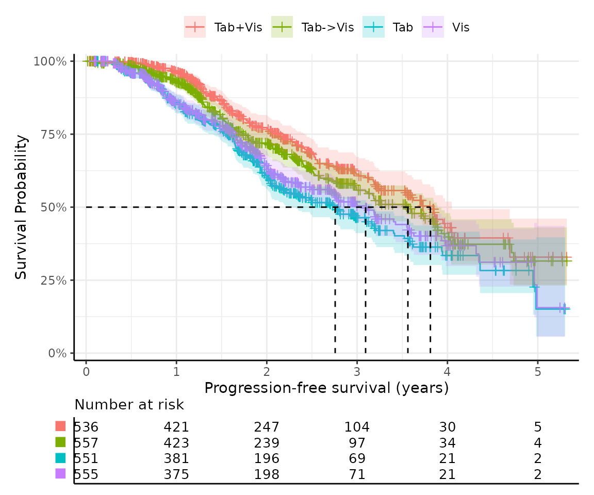
This function uses easysurv’s plot_km() to generate the
KM curves. You can also use plot_km() directly, or pass
additional arguments to get_km(), to customize the
plot.
For example, by default, shapes are used in place of group names in
the risk table beneath the plot to save space. You can change this by
setting risktable_symbols = FALSE.
km_with_names <- get_km(
data = surv_data,
time = "time",
event = "event",
group = "group",
risktable_symbols = FALSE
)
km_with_names$km_plot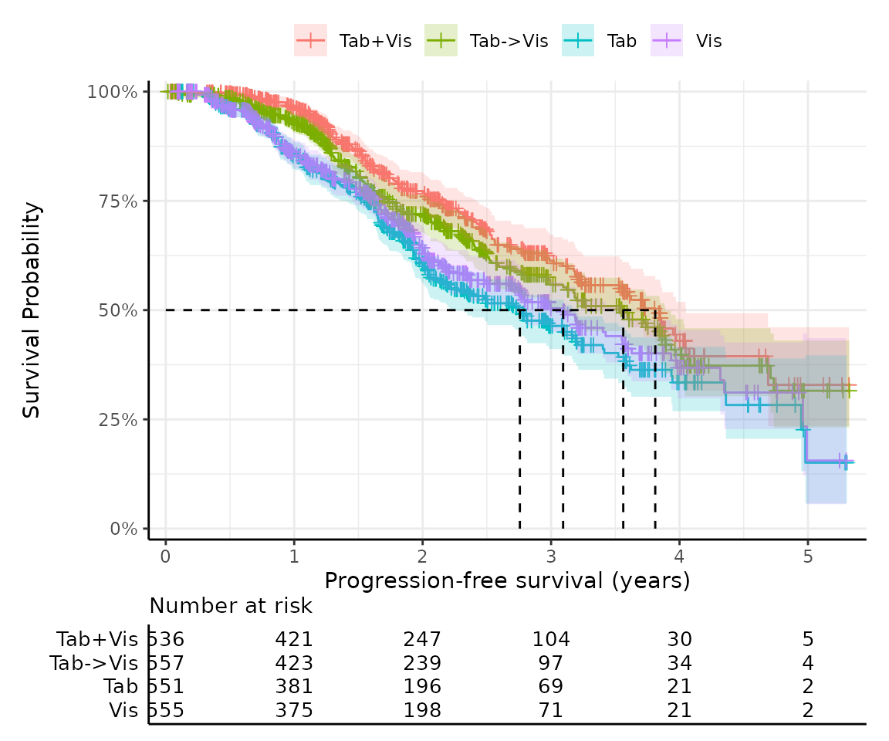
Testing proportional hazards
The Cox proportional hazards model is a popular method for estimating the effect of covariates on survival time. The model assumes that the hazard ratio for a given covariate is constant over time.
easysurv provides a simple function,
test_ph() to support testing the proportional hazards
assumption.
The output reports the hazard ratios between groups, the 95% confidence intervals, p-values for the test of survival differences and proportional hazards.
In this example, the survival::cox.zph() found a global
p-value of 0.021, suggesting that the proportional hazards assumption is
violated (p < 0.05).
This is supported by a Schoenfeld residual plot, which shows a clear pattern of non-proportionality; and a log cumulative hazard plot in which the lines are not parallel.
However, it is not always clear cut, so a reminder is printed that the results should be interpreted in totality and with caution.
ph <- test_ph(
data = surv_data,
time = "time",
event = "event",
group = "group"
)
ph
#>
#> ── Testing Survival Curve Differences ──────────────────────────────────────────
#> ℹ `survival::survdiff()` found a p-value of 0.
#> ✔ suggests survival differences between groups are statistically significant.
#>
#> ── Testing Proportional Hazards Assumption ─────────────────────────────────────
#>
#> ── Cox Proportional Hazards Model ──
#>
#> `survival::coxph()` output:
#>
#> coef exp(coef) se(coef) z Pr(>|z|)
#> groupTab->Vis 0.1830613 1.200888 0.1096992 1.668758 9.516544e-02
#> groupTab 0.5033557 1.654263 0.1053908 4.776089 1.787369e-06
#> groupVis 0.4046802 1.498823 0.1074969 3.764574 1.668336e-04
#>
#> The exp(coef) column shows the hazard ratios were 1.201, 1.654, and 1.499.
#>
#> ℹ `survival::cox.zph()` found a p-value of 0.021.
#> ! suggests the PH assumption may not be valid.
#>
#> ── Plots ──
#>
#> ℹ Schoenfeld residuals and log cumulative hazard plots have been printed.
#> ℹ PH tests may not always agree, so consider the results of all tests and plots in totality.
#> ────────────────────────────────────────────────────────────────────────────────
#> → For more information, run `View()` on saved `test_ph()` output.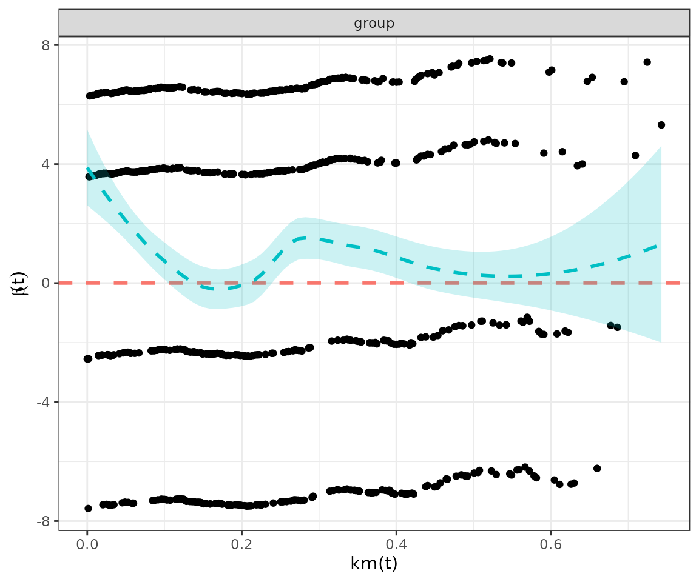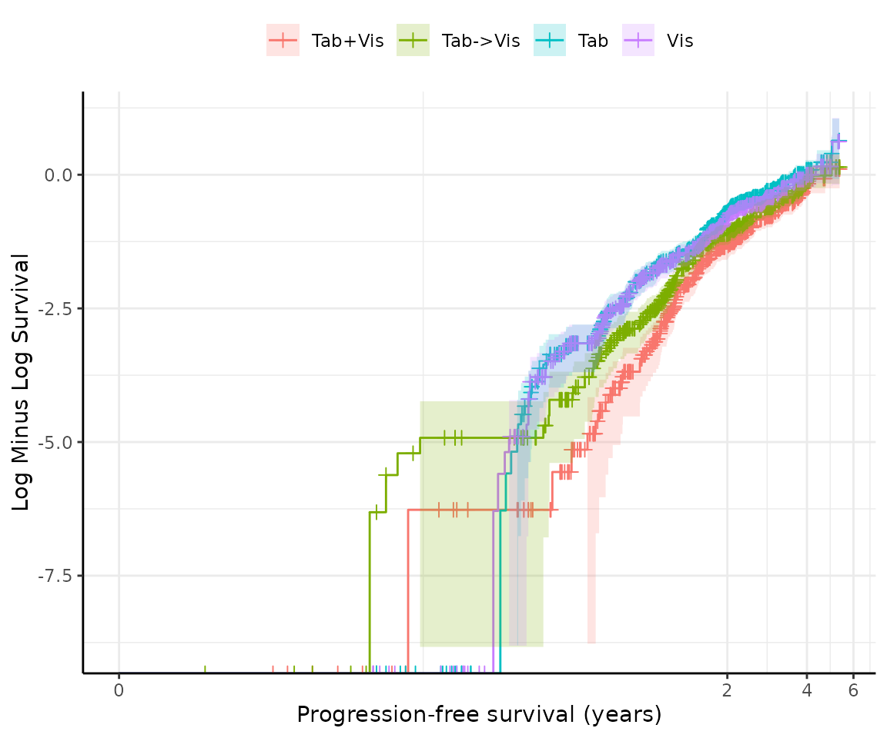
Fitting survival models
easysurv provides a simple function,
fit_models() to fit survival models. This function can fit
multiple distributions at once, and returns a summary of all
distributions attempted.
Aside: handling failure
Under the hood, easysurv builds upon the
parsnip package. Through fit_models(), we make
a key update to this approach to handle errors in the model fitting
process.
purrr::possibly() is leveraged to help code run smoothly
even if the model fitting process fails. This is particularly useful
when testing multiple distributions, as the best distribution is not
known a priori.
# We created a function to return NULL if issues arise in model fitting.
pfit <- purrr::possibly(.f = parsnip::fit)
# Without easysurv, here's how parsnip might be used to fit models:
parsnip::survival_reg(dist = "weibull") |>
parsnip::set_engine("flexsurv") |>
parsnip::fit(
formula = survival::Surv(time, event) ~ group,
data = surv_data
)
# But, in easysurv, the fit_models() function uses pfit() to handle errors.
# This looks a bit like:
parsnip::survival_reg(dist = "weibull") |>
parsnip::set_engine("flexsurv") |>
pfit(
formula = survival::Surv(time, event) ~ group,
data = surv_data
)In the returned object, we track which distributions were attempted, which were successful, and which failed. Any failures are highlighted when the fit_models object is printed.
# Take just two rows of data and expect distributions to fail.
lacking <- surv_data[3:4, ]
suspected_failure <- fit_models(
data = lacking,
time = "time",
event = "event",
dists = c("exp", "gamma", "gengamma", "gompertz", "llogis", "lnorm", "weibull")
)
#> ! Failed distributions: "lnorm" and "weibull".
print(suspected_failure)
#>
#> ── Fit Models Summary ──────────────────────────────────────────────────────────
#> Engine: flexsurv.
#> Approach: predict_by_none.
#> • The predict_by argument was not specified.
#> • Therefore, models were fit on the full dataset.
#>
#> Distributions attempted: "exp", "gamma", "gengamma", "gompertz", "llogis",
#> "lnorm", and "weibull".
#>
#> ── Median survival estimates ──
#>
#> ! Some distributions failed to converge.
#> Failed distributions: "lnorm" and "weibull"
#> dist aic_rank median_est
#> 1 exp 5 2.375962
#> 2 gamma 3 2.316222
#> 3 gengamma 2 2.316587
#> 4 gompertz 4 2.292949
#> 5 llogis 1 2.316222
#> ℹ For comparison, the KM median survival times were 2.316.
#> ℹ The distribution with the best (lowest) AIC was "llogis".
#> ────────────────────────────────────────────────────────────────────────────────
#> → For more information, run `View()` on saved `fit_models()` output.Fitting models separately
By default, fit_models() fits the exponential, gamma,
generalized gamma, Gompertz, log-logistic, log-normal, and Weibull
distributions using a flexsurv engine.
The predict_by argument allows you to stratify the
analysis by a factor variable. This is useful for comparing survival
curves between groups.
models <- fit_models(
data = surv_data,
time = "time",
event = "event",
predict_by = "group"
)
models
#>
#> ── Fit Models Summary ──────────────────────────────────────────────────────────
#> Engine: flexsurv.
#> Approach: predict_by_other.
#> • The predict_by argument was set to "group", which was not a covariate.
#> • Therefore, models were fit for each level of "group".
#> • This is sometimes referred to as "separate fits".
#>
#> Distributions attempted: "exp", "gamma", "gengamma", "gompertz", "llogis",
#> "lnorm", and "weibull".
#>
#> ── Median survival estimates ──
#>
#> ── Group: "Tab+Vis"
#> dist aic_rank median_est
#> 1 exp 7 4.808931
#> 2 gamma 4 3.551551
#> 3 gengamma 2 3.606839
#> 4 gompertz 6 3.704355
#> 5 llogis 3 3.529768
#> 6 lnorm 1 3.640024
#> 7 weibull 5 3.582751
#> ℹ For comparison, the KM median survival time was 3.811.
#> ℹ The distribution with the best (lowest) AIC was "lnorm".
#>
#> ── Group: "Tab->Vis"
#> dist aic_rank median_est
#> 1 exp 7 4.050024
#> 2 gamma 2 3.323607
#> 3 gengamma 3 3.340974
#> 4 gompertz 6 3.475535
#> 5 llogis 1 3.289348
#> 6 lnorm 5 3.453536
#> 7 weibull 4 3.344948
#> ℹ For comparison, the KM median survival time was 3.562.
#> ℹ The distribution with the best (lowest) AIC was "llogis".
#>
#> ── Group: "Tab"
#> dist aic_rank median_est
#> 1 exp 7 3.042705
#> 2 gamma 4 2.696690
#> 3 gengamma 2 2.684589
#> 4 gompertz 6 2.869834
#> 5 llogis 3 2.642277
#> 6 lnorm 1 2.681792
#> 7 weibull 5 2.743302
#> ℹ For comparison, the KM median survival time was 2.757.
#> ℹ The distribution with the best (lowest) AIC was "lnorm".
#>
#> ── Group: "Vis"
#> dist aic_rank median_est
#> 1 exp 7 3.357186
#> 2 gamma 4 2.896536
#> 3 gengamma 2 2.930034
#> 4 gompertz 6 3.062430
#> 5 llogis 3 2.864902
#> 6 lnorm 1 2.918391
#> 7 weibull 5 2.934549
#> ℹ For comparison, the KM median survival time was 3.094.
#> ℹ The distribution with the best (lowest) AIC was "lnorm".
#> ────────────────────────────────────────────────────────────────────────────────
#> → For more information, run `View()` on saved `fit_models()` output.Fitting models jointly
Alternatively, you can fit all models “jointly” by specifying the
treatment group as a covariate, and also setting predict_by
to the treatment group.
This may not be appropriate given the outcomes of the proportional hazard tests above, but is shown for completeness.
joint_models <- fit_models(
data = surv_data,
time = "time",
event = "event",
predict_by = "group",
covariates = "group"
)
joint_models
#>
#> ── Fit Models Summary ──────────────────────────────────────────────────────────
#> Engine: flexsurv.
#> Approach: predict_by_covariate.
#> • The predict_by argument was set to "group", which was also a covariate.
#> • Therefore, models were fit on the full dataset.
#> • This is sometimes referred to as "joint fits".
#>
#> Distributions attempted: "exp", "gamma", "gengamma", "gompertz", "llogis",
#> "lnorm", and "weibull".
#>
#> ── Median survival estimates ──
#>
#> dist aic_rank group=Tab+Vis group=Tab->Vis group=Tab group=Vis
#> 1 exp 7 4.808931 4.050024 3.042705 3.357186
#> 2 gamma 4 3.744443 3.312688 2.679957 2.847226
#> 3 gengamma 1 3.899873 3.341921 2.669066 2.825529
#> 4 gompertz 6 3.816103 3.473659 2.863736 3.042851
#> 5 llogis 3 3.753334 3.280103 2.622823 2.791301
#> 6 lnorm 2 3.968814 3.359080 2.681873 2.832604
#> 7 weibull 5 3.735166 3.347753 2.732276 2.905239
#> ℹ For comparison, the KM median survival times were 3.811, 3.562, 2.757, and 3.094.
#> ℹ The distribution with the best (lowest) AIC was "gengamma".
#> ────────────────────────────────────────────────────────────────────────────────
#> → For more information, run `View()` on saved `fit_models()` output.Fitting spline models
easysurv also supports fitting spline models via a
flexsurvspline engine. This is useful when the relationship
between time and the hazard is not linear. The code below fits spline
models with 1, 2, and 3 knots all on the hazard scale.
spline_models <- fit_models(
data = surv_data,
time = "time",
event = "event",
predict_by = "group",
engine = "flexsurvspline",
k = c(1, 2, 3),
scale = "hazard"
)Fitting cure models
easysurv also supports fitting mixture cure models via a
flexsurvcure engine. This may be useful when a proportion
of the population is assumed to be cured and therefore is much less
likely to experience the event of interest. The code below is an example
of the syntax.
The output for cure models also includes estimated cure fractions.
cure_models <- fit_models(
data = surv_data,
time = "time",
event = "event",
predict_by = "group",
engine = "flexsurvcure"
)Making predictions and plots
Once you have your fit_models() object, you can use
predict_and_plot() to generate predictions and plots that
may help you choose between models.
The predict_and_plot() function generates survival and
hazard plots for each model, stratified by the predict_by
variable from the original fit_models() call (if
predict_by was provided).
If you don’t provide a times argument, the function will
predict up to 5 times the maximum observed time in the data, at 100
equally distributed time points, which is often sufficient.
# With the "models" object from above...
preds_and_plots <- predict_and_plot(models)
preds_and_plots
#> ℹ Survival plots have been printed.
#> ℹ Hazard plots have been printed.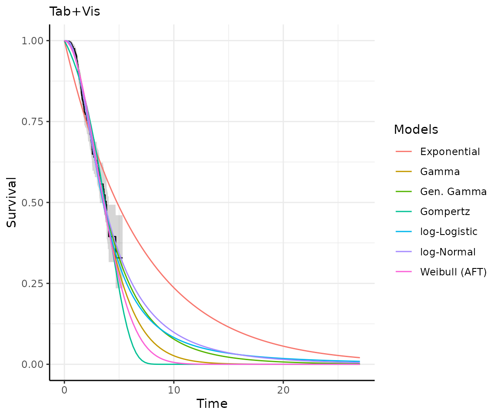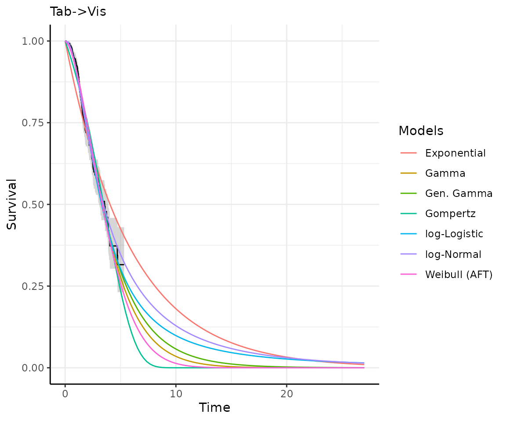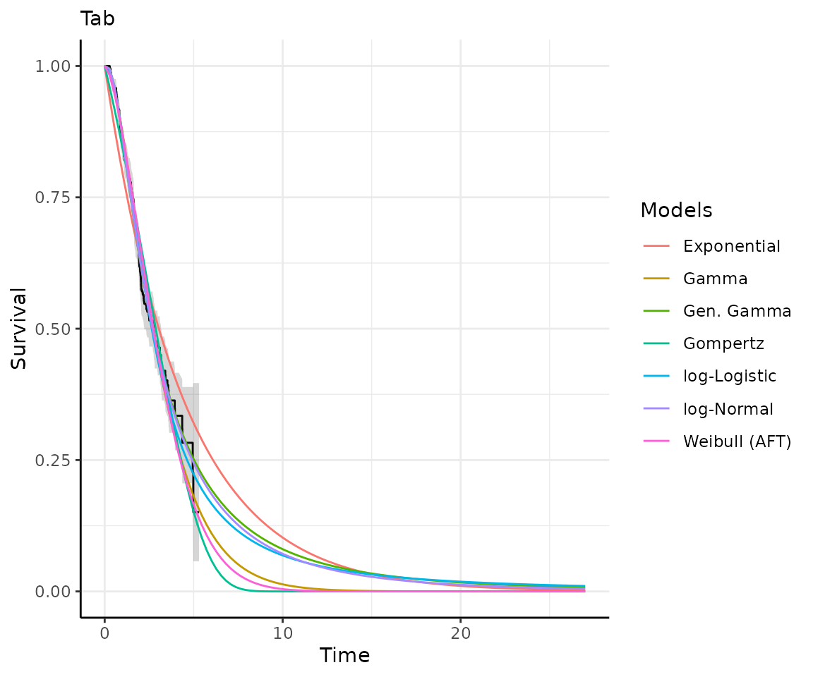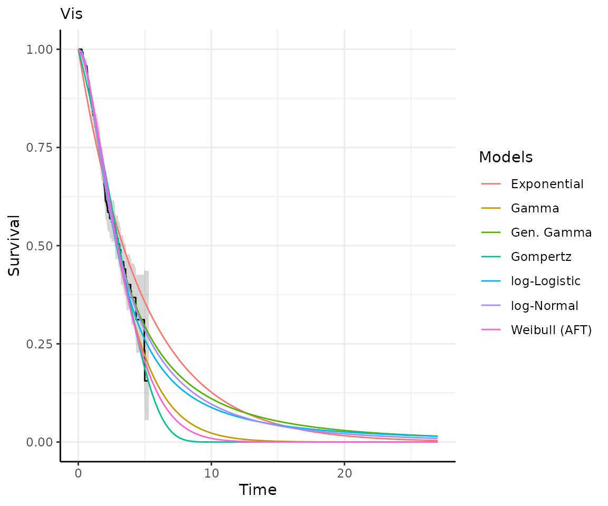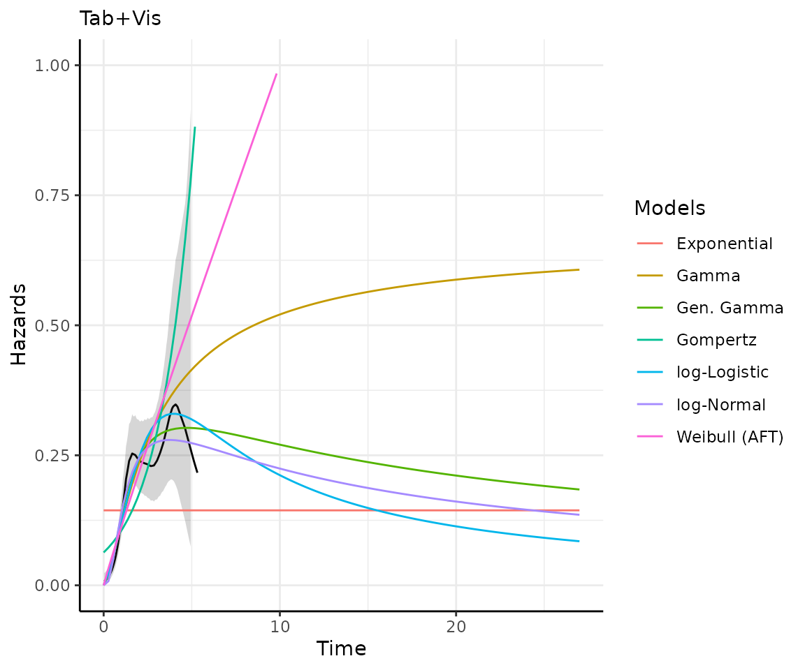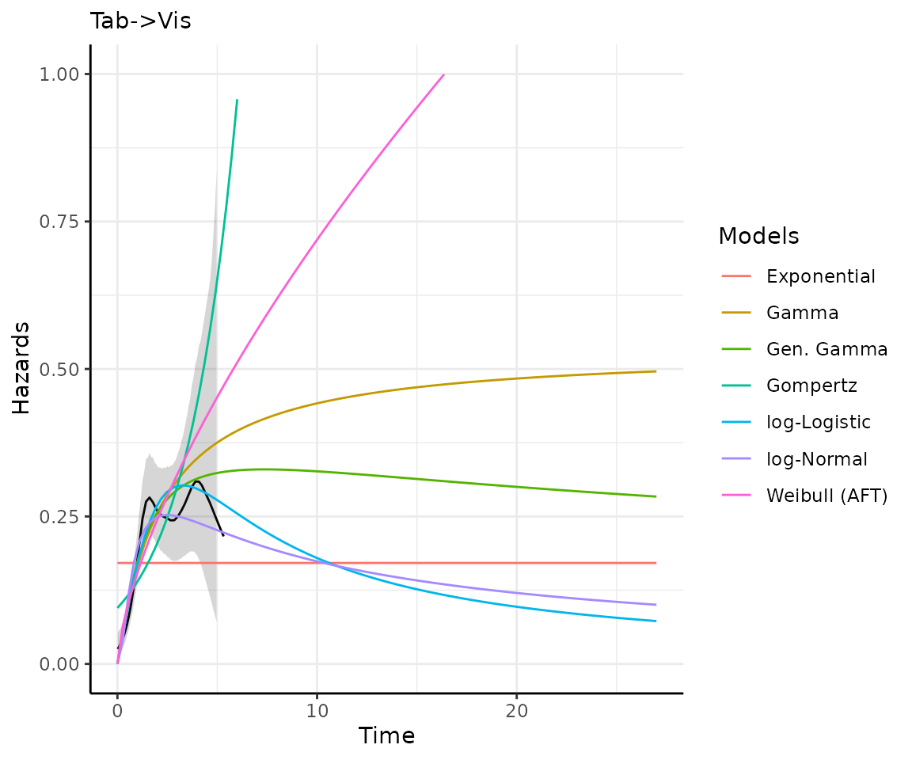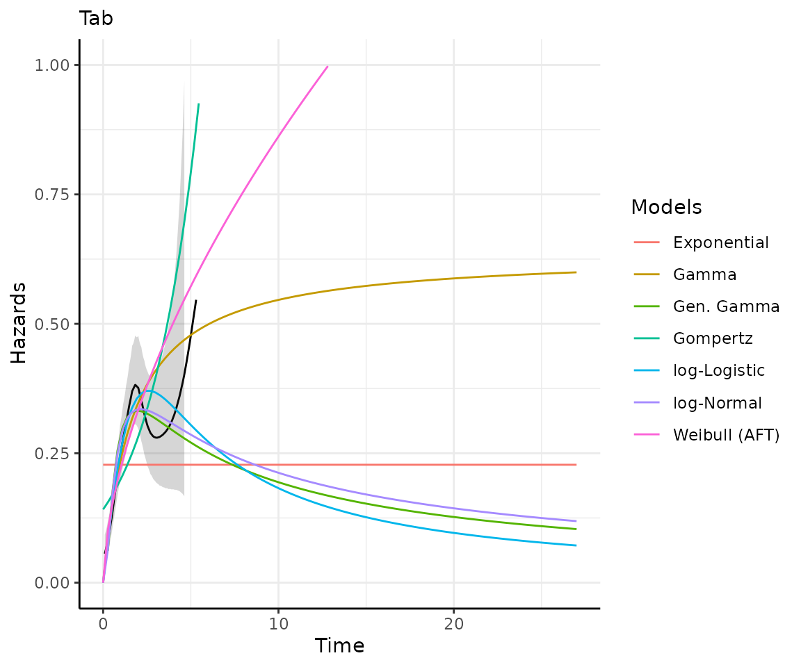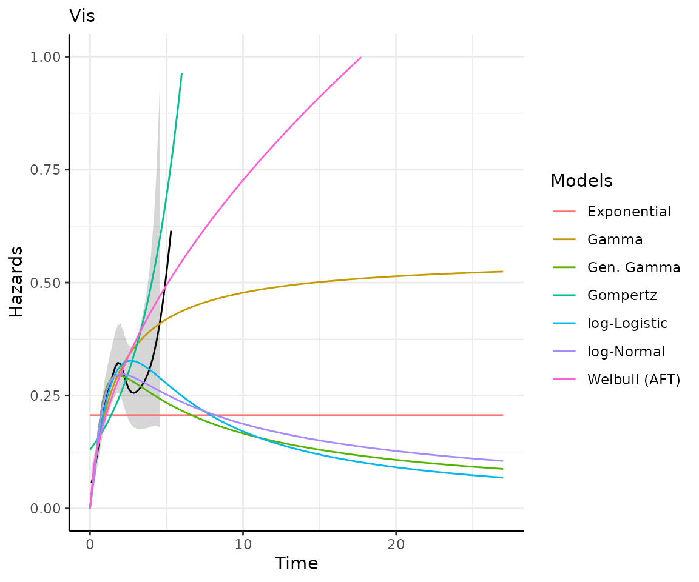
Exporting your results
easysurv provides a simple function,
write_to_xl() to export your results to a .xlsx file, using
the openxlsx package.
The function can take outputs from get_km(),
test_ph(), fit_models(), and
predict_and_plot().
For example, you can export the outputs from the above code chunks to an Excel file with the following code:
# Create workbook
wb <- openxlsx::createWorkbook()
# Write easysurv objects to the workbook
write_to_xl(wb, km)
write_to_xl(wb, ph)
write_to_xl(wb, models)
write_to_xl(wb, preds_and_plots)
# Save and open the workbook
openxlsx::saveWorkbook(wb, file = "my_file_name.xlsx", overwrite = TRUE)
openxlsx::openXL("my_file_name.xlsx")Note: if you have multiple fit_models or
predict_and_plot objects, you should save these to other
workbooks, since write_to_xl() may choose the same sheet
names and overwrite data from other models.